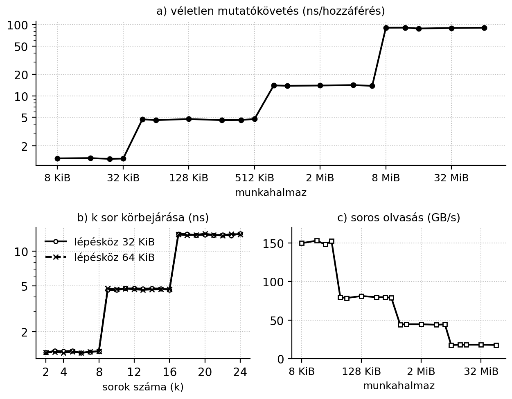

Egy könyv végén könnyű azt érezni, hogy mindent értünk – amíg egyetlen lapon kell egymás mellett elágazást becsülni, litmus-tesztet eldönteni és egy ismeretlen gép cache-méretét kitalálni. Ez a feladatsor ezt a váltást gyakoroltatja. A 25 feladat a teljes könyvet lefedi, a sorrend a fejezetekét követi, a két utolsó feladat pedig „mérési adatok” alapján kér következtetést.
Használat. Állíts be 180 percet, dolgozz segédeszköz nélkül (a függelékben található Képlet- és jelölésgyűjtemény használható), csak utána nézd meg a megoldásokat. Minden megoldás megadja, melyik alfejezetet érdemes ismételni. Ha ismétlés közben az olvasási útvonalat keresed, a Tanulási útvonalak és belépő teszt segít.
Szintek: A 3 pont, B 4 pont, C 6 pont; összesen 106 pont. Ahol egy feladat modellt rögzít (késleltetések, szabályok), azt használd – a valódi gépek ennél bonyolultabbak.
1. (A) Egy program utasítást hajt végre 3,4 GHz-en: 50% ALU (CPI 1), 30% memória (CPI 2), 20% elágazás (CPI 3). Mennyi a futásidő? Mennyit gyorsul, ha az elágazások CPI-je 1,5-re csökken?
2. (B) Egy gyorsító a futásidő 90%-át 20-szorosára gyorsítja, az indítás és adatátvitel viszont az eredeti idő 4%-át hozzáadja. Mekkora a gyorsulás, és mi a korlátja, ha a gyorsító végtelenül gyors?
3. (B) Egy gép csúcsa 200 GFLOP/s,
memória-sávszélessége 40 GB/s. Mennyi a roofline-korlát a
double elemű
kernelre (write-allocate nélkül számolva) és egy
FLOP/B intenzitású kernelre? Hol a gerincpont?
4. (A) Add meg a -7 nyolcbites kettes
komplemens alakját, és azt a lui/addi párt,
amely a 0x12345FFF konstanst a t0 regiszterbe
tölti.
5. (A) Kódold az addi t0, a0, -3
utasítást 32 bites szóvá, és dekódold a 0x00B50633
szót.
6. (A) RV32I-ben mely regisztereket kell a hívottnak
megőriznie? Mit tartalmaz mepc és mcause, ha
egy U módú program ecall-t hajt végre?
7. (B) A szakaszok késleltetése IF 250, ID 150, EX 200, MEM 300, WB 100 ps, a szakaszregiszter 20 ps. Mekkora az egyciklusú és a futószalagos gép ciklusideje? Mennyivel gyorsabb a futószalagos, ha CPI-je 1,25?
8. (B) Rajzold fel a diagramot továbbítással, és add meg a ciklusszámot továbbítás nélkül is (elágazás EX-ben, becslés: nem ugrik, az elágazás nem ugrik, a regiszterfájl az első félciklusban ír):
lw t0, 0(a0)
add t1, t0, t0
sw t1, 4(a0)
beq t1, zero, L
addi a0, a0, 89. (B) Egy elágazás kimenetele
TTTNTTTN. a) Hány tévesztés a kétbites (kezdet: 1) és az
egybites (kezdet: nem ugrik) számlálóval? b) Legalább hány előzménybit
kell, hogy egy előzményalapú becslő hosszú, periodikus TTTN
sorozaton ne tévedjen?
10. (C) Tomasulo-gép, ROB-bal. I az . ciklusban kap foglalási állomást; végrehajtása legkorábban a következő ciklusban és minden operandusának kiírása utáni ciklusban indul; az eredmény a végrehajtás utolsó ciklusát követő ciklusban kerül a közös adatsínre (egy adatsín, ütközéskor az idősebb nyer); a commit sorrendi, ciklusonként egy, legkorábban a kiírás utáni ciklusban; végrehajtóegység korlátlan.
| utasítás | végrehajtási ciklus | |
|---|---|---|
| I1 | lw x1, 0(x9) |
2 |
| I2 | mul x2, x1, x3 |
4 |
| I3 | add x4, x5, x6 |
1 |
| I4 | add x1, x4, x4 |
1 |
| I5 | sub x7, x2, x1 |
1 |
Add meg mindegyik kiírási és commit-ciklusát. Melyik
x1-et olvassa I5? Mi történik I3 és I4 eredményével, ha I2
kivételt okoz?
11. (B) 32 KiB-os, 8 utas, 64 bájtos soros cache 32
bites címekkel: add meg
-t,
a mezőszélességeket és a 0x1234ABCD címke/index/eltolás
bontását. Egy kétutas halmazban hány hiba az ABCABC sorozat
LRU-val és OPT-tal?
12. (B) L1: 4 ciklus, hibaarány 5%; L2: 12 ciklus, lokális hibaarány 40%; memória 200 ciklus. Mekkora az AMAT? Ha a DRAM-ban a sorpuffer-találat 14 ns, a sorütközés 42 ns, és a találati arány 60%, mennyi az átlag?
13. (B) Egy mag 80 ns késleltetésű memóriából 50 GB/s-ot szeretne olvasni 64 bájtos sorokban. Hány sornak kell egyszerre úton lennie? Mennyit ér el 16 MSHR-rel?
14. (B) Sv39, 4 KiB-os lapok: add meg a
0x80201ABC cím VPN[2], VPN[1], VPN[0] mezőit és eltolását.
Mekkora egy 64 bejegyzéses TLB lefedettsége 4 KiB-os és 2 MiB-os
lapokkal?
15. (B) és ugyanabban a sorban van, két mag, MESI: P0 olvassa -et; P1 olvassa -et; P1 írja -et; P0 olvassa -et; P0 írja -t; P1 olvassa -et. Add meg lépésenként az állapotokat és a buszüzeneteket. Melyik hiba a false sharing következménye?
16. (C) MP: P0: ; . P1: ; . SB: P0: ; . P1: ; . Mindkét tesztre: lehetséges-e SC-ben, TSO-ban, illetve RISC-V/ARM-szerű gyenge modellben az (MP), illetve az (SB) kimenet? Hogyan tiltod meg C++-ban?
17. (B) Egy kernel idejének 80%-a vektorizálható; az
AVX2 nyolc float sávján a vektorizált rész 6-szorosára
gyorsul. Mekkora a teljes gyorsulás? Hány teljes vektoriteráció és hány
maradékelem jut
elemre?
18. (B) Egy 32 szálas warp minden szála végrehajt 20 közös utasítást; utána minden negyedik szál 40, a többi 10 utasítást (egymás utáni ágak). Mekkora a sávkihasználtság? Hány 64 bájtos tranzakció kell, ha a 32 szál egymás melletti, illetve egymástól 64 bájtra lévő 4 bájtos elemet tölt (a modellben a kezdőcím sorhatáron van)?
19. (B) Kimenetben gyűjtő (output-stationary) szisztolikus rács mátrixokat szoroz: és az cellában a ütemben találkozik (0-tól indexelve). Hány ütem, és mekkora a cellák kihasználtsága?
20. (B) 1,0 V-on, 3 GHz-en a dinamikus teljesítmény 60 W, a statikus 10 W; a feladat ciklus. DVFS-sel 0,8 V-on és 2 GHz-en futunk (a szivárgási áram változatlan). Számold ki az energiát és az EDP-t mindkét ponton.
21. (B) Hamming(7,4) paritásbitekkel az 1, 2, 4 pozíción, plusz egy teljes paritásbit. Kódold az adatot (a 3, 5, 6, 7 pozícióra). A 6. pozíció átbillen: mi a szindróma? Mit észlel a kód két hibánál?
22. (C) Magyarázd el a Spectre v1 mechanizmusát a könyv modelljén (négy lépés), miért nem segít, hogy a ROB visszagörgeti a spekulatív utasításokat, és nevezz meg két védekezést az árával. Milyen kapcsolatban áll ez az állandó idejű kód elvével, és miért nem elég az ECC a Rowhammer ellen?
23. (B) , , kiadott µop 4000, befejezett 3400, front-endben üres slot 800, helyreállás 50 ciklus, memóriavárakozás 600, magvárakozás 200. Számold ki a top-down első és második (back-end) szintjét; mi a teendő?
Az ábra egy kitalált gép modelljéből számolt görbéket mutat (nem mérés): véletlen mutatókövetést, darab, adott lépésközre lévő sor körbejárását és soros olvasási sávszélességet. Az órajel 3,0 GHz, a sorméret 64 B.

24. (C) Add meg a cache-szintek számát, kapacitását és késleltetését ciklusban, a memória késleltetését, az L1 és az L2 asszociativitását. Indokold, miért kell mindkét lépésközös görbe, és mit nem lehet az adatokból meghatározni.
25. (C) A gép számítási csúcsa 96 GFLOP/s. Egy FLOP/B intenzitású kernelt futtatunk 256 KiB-os, majd 32 MiB-os munkahalmazon. Mekkora a roofline-korlát? Mekkora intenzitásnál lenne mindkét esetben a számítás a korlát?
Részpont jár a helyes gondolatmenetért akkor is, ha a számolás elcsúszik; a feltételek kimondása (modell, egység) feladatonként 1 pont.
| Pontszám | Értékelés | Teendő |
|---|---|---|
| 90–106 | kiváló | a záróprojektek kiterjesztése |
| 70–89 | jó | a hibás feladatok alfejezetei, majd új kör egy hét múlva |
| 50–69 | részleges | a gyenge témakör fejezeteinek újraolvasása a Próbáld ki résszel |
| 50 alatt | alapozás szükséges | a tanulási útvonal szerinti újrakezdés |
Minden megoldást érdemes a könyv kódjával ellenőrizni; a közös blokk:
import sys; sys.path.insert(0, "code")
from archkit import bits, bpred, cache, perf, pipeline, projects, riscv, topdown1. , s. Új CPI 1,4, gyorsulás (Végrehajtási idő, CPI és a vasegyenlet).
2. ; esetén . Ez a kiterjesztett Amdahl-modell (Gyorsítók tervezési elvei: DSA, FPGA, közel-memória számítás).
3. Triad: 2 FLOP / 24 B, , GFLOP/s. : GFLOP/s. Gerincpont FLOP/B (A roofline-modell).
print(hex(-7 & 0xFF), [hex(v) for v in bits.split_hi_lo(0x12345FFF)])
print(f"{riscv.encode('addi', rd=5, rs1=10, imm=-3):#010x} {riscv.disasm(0x00B50633)}")0xf9 ['0x12346', '0xfff']
0xffd50293 add a2, a0, a14.
= 0xF9. Az alsó 12 bit (0xFFF) előjelesen
,
ezért a felső rész eggyel nagyobb: lui t0, 0x12346, majd
addi t0, t0, -1 (Aritmetika, logika,
betöltés és tárolás, Számábrázolás
gépközelből).
5. 0xffd50293; a második szó
add a2, a0, a1 (Kódolás bitszinten és
egy RISC-V-értelmező).
6. A sp és az
s0–s11 regisztereket. mepc az
ecall címe, mcause = 8 (környezethívás U
módból), a vezérlés M módban az mtvec-nél folytatódik (Hívási konvenció, verem és veremkeret, Kivételek, megszakítások és
privilégiumszintek).
7. Egyciklusú: ps; futószalagos: ps. Gyorsulás (Órajel, kritikus út és időzítési korlátok, A futószalag elve: átbocsátás és késleltetés).
src = """
lw t0, 0(a0)
add t1, t0, t0
sw t1, 4(a0)
beq t1, zero, L
addi a0, a0, 8
L: nop
"""
tr = riscv.static_trace(src)[:5]
r = pipeline.simulate(tr)
print(r.table())
print("továbbítás nélkül:", pipeline.simulate(tr, forwarding=False).cycles, "ciklus")
for p in (bpred.Bimodal(16), bpred.OneBit(16)):
print(p.name, "tévesztés:", bpred.evaluate(p, "TTTNTTTN").mispredicts)
for h in (2, 3):
res = bpred.evaluate(bpred.GShare(index_bits=6, history_bits=h), "TTTN" * 50, warmup=40)
print(f"gshare, h = {h}: {res.mispredicts} tévesztés {res.branches} elágazásból")utasítás 1 2 3 4 5 6 7 8 9 10
lw t0, 0(a0) IF ID EX MEM WB
add t1, t0, t0 IF ID s EX MEM WB
sw t1, 4(a0) IF s ID EX MEM WB
beq t1, zero, L IF ID EX MEM WB
addi a0, a0, 8 IF ID EX MEM WB
továbbítás nélkül: 13 ciklus
bimodal tévesztés: 3
one-bit tévesztés: 4
gshare, h = 2: 80 tévesztés 160 elágazásból
gshare, h = 3: 0 tévesztés 160 elágazásból8. Továbbítással egyetlen load-use megakadás:
ciklus. Továbbítás nélkül 13: az add és a sw
is két-két ciklust vár a megelőző utasítás visszaírására (Adathazárdok: forwarding és stall).
9. Kétbites: 3 tévesztés (a bemelegítés és a két N);
egybites: 4. Előzmény: 2 bit nem elég, mert a TT után hol
T, hol N jön; 3 bit minden helyzetet egyértelművé tesz (Statikus becslés és a kétbites számláló, Korrelált és globális előzményű becslők).
prog = [("x1", [], 2), ("x2", ["x1", "x3"], 4), ("x4", ["x5", "x6"], 1),
("x1", ["x4", "x4"], 1), ("x7", ["x2", "x1"], 1)]
producer, writes, commits, taken = {}, [], [], set()
for i, (rd, srcs, lat) in enumerate(prog, start=1):
ready = max([writes[producer[s]] for s in srcs if s in producer], default=0)
start = max(i, ready) + 1
w = start + lat
while w in taken: # egyetlen adatsín, az idősebb már lefoglalta
w += 1
taken.add(w)
writes.append(w)
producer[rd] = i - 1 # átnevezés: mindig a legutóbbi író
commits.append(max(w + 1, commits[-1] + 1 if commits else 0))
print(f"I{i}: végrehajtás {start}-{start + lat - 1}, kiírás {w}, commit {commits[-1]}")I1: végrehajtás 2-3, kiírás 4, commit 5
I2: végrehajtás 5-8, kiírás 9, commit 10
I3: végrehajtás 4-4, kiírás 5, commit 11
I4: végrehajtás 6-6, kiírás 7, commit 12
I5: végrehajtás 10-10, kiírás 11, commit 13I5 az I4 által előállított x1-et olvassa (az átnevezés
feloldja a WAW függőséget I1 és I4 között). I3 és I4 hamarabb elkészül,
mint I2, de a sorrendi commit miatt nem véglegesedett: ha I2 kivételt
okoz, a ROB eldobja I2-t és minden fiatalabbat, így a kivétel pontos (A Tomasulo-algoritmus, Regiszterátnevezés, ROB és spekuláció).
g = cache.Geometry(32 << 10, 64, 8)
print(g.sets, g.offset_bits, g.index_bits, g.tag_bits, [hex(v) for v in g.split(0x1234ABCD)])
for pol in ("lru", "opt"):
misses = sum(not s["hit"] for s in cache.run_set("ABCABC", ways=2, policy=pol))
print(pol, "hibák:", misses)
va = 0x80201ABC
print("VPN2, VPN1, VPN0, eltolás:", (va >> 30) & 511, (va >> 21) & 511, (va >> 12) & 511,
hex(va & 0xFFF))64 6 6 20 ['0x1234a', '0x2f', '0xd']
lru hibák: 6
opt hibák: 4
VPN2, VPN1, VPN0, eltolás: 2 1 1 0xabc11.
,
,
,
;
címke 0x1234A, index 47, eltolás 13. LRU-val mind a 6
hozzáférés hibázik, OPT-tal 4 (Cache-szervezés:
leképezés és címbontás, Csere- és írási
stratégiák).
12. ciklus; DRAM: ns (AMAT, a hibák osztályozása és a többszintű cache, A DRAM működése).
13. Little: sor. 16 MSHR-rel GB/s – a többit prefetch vagy több mag adhatja (Egy modern mag anatómiája, Memóriavezérlő, sávszélesség és mérés).
14. VPN[2] = 2, VPN[1] = 1, VPN[0] = 1, eltolás
0xABC. Lefedettség
KiB = 256 KiB, illetve
MiB = 128 MiB (Lapozás és többszintű laptáblák,
TLB, nagy lapok és a VIPT cache).
15.
| lépés | P0 | P1 | busz |
|---|---|---|---|
| P0 olvas | E | I | BusRd |
| P1 olvas | S | S | BusRd |
| P1 ír | I | M | BusUpgr |
| P0 olvas | S | S | BusRd, Flush |
| P0 ír | M | I | BusUpgr |
| P1 olvas | S | S | BusRd, Flush |
Az utolsó hiba false sharing: P1 az -et olvasná, amelyet P0 nem módosított, mégis érvénytelen lett a sora, mert P0 ugyanabba a sorba írt (MESI és MOESI, A koherencia ára: ping-pong és false sharing).
16. A következő kis felsoroló SC-t, TSO-t (szálankénti FIFO tárolópuffer) és egy egyszerűsített gyenge modellt (más című műveletek átrendezhetők) vizsgál:
from itertools import permutations
def outcomes(threads, model):
seen, found = set(), set()
def orders(ops):
if model != "gyenge":
return [ops]
return [list(p) for p in permutations(ops)
if all(p.index(a) < p.index(b) for i, a in enumerate(ops)
for b in ops[i + 1:] if a[1] == b[1])]
def step(code, pc, bufs, mem, regs):
key = (code, pc, bufs, mem, regs)
if key in seen:
return
seen.add(key)
if all(p == len(c) for p, c in zip(pc, code)) and not any(bufs):
found.add(tuple(v for _, v in sorted(regs)))
for t, buf in enumerate(bufs):
if buf: # a puffer feje a memóriába ír
m = dict(mem) | {buf[0][0]: buf[0][1]}
rest = bufs[:t] + (buf[1:],) + bufs[t + 1:]
step(code, pc, rest, tuple(sorted(m.items())), regs)
if pc[t] < len(code[t]):
kind, var, arg = code[t][pc[t]]
nxt = pc[:t] + (pc[t] + 1,) + pc[t + 1:]
if kind == "W" and model == "TSO":
b2 = bufs[:t] + (buf + ((var, arg),),) + bufs[t + 1:]
step(code, nxt, b2, mem, regs)
elif kind == "W":
m = dict(mem) | {var: arg}
step(code, nxt, bufs, tuple(sorted(m.items())), regs)
else:
own = [v for a, v in buf if a == var]
val = own[-1] if own else dict(mem).get(var, 0)
step(code, nxt, bufs, mem, regs + ((arg, val),))
for a in orders(threads[0]):
for b in orders(threads[1]):
seen.clear()
step((tuple(a), tuple(b)), (0, 0), ((), ()), (), ())
return found
MP = [[("W", "x", 1), ("W", "y", 1)], [("R", "y", "r1"), ("R", "x", "r2")]]
SB = [[("W", "x", 1), ("R", "y", "r1")], [("W", "y", 1), ("R", "x", "r2")]]
for model in ("SC", "TSO", "gyenge"):
print(f"{model:6} MP (1,0): {(1, 0) in outcomes(MP, model)!s:5}"
f" SB (0,0): {(0, 0) in outcomes(SB, model)}")SC MP (1,0): False SB (0,0): False
TSO MP (1,0): False SB (0,0): True
gyenge MP (1,0): True SB (0,0): TrueMP rossz kimenete SC-ben és TSO-ban tiltott, gyenge modellben
lehetséges; az SB
már TSO-ban is. C++-ban MP-hez az
írása release, olvasása acquire (ha P1 az
-et
csak
esetén olvassa,
lehet közönséges változó, különben atomic); SB-hez mind a
négy műveletnek seq_cst-nek kell lennie, vagy
seq_cst kerítés kell az írás és az olvasás közé (TSO: az x86 memóriamodellje, Gyenge modellek: ARM és RISC-V, A hardver és a C++ memóriamodell). A felsoroló
egyszerűsített: a valódi RVWMO és ARMv8 a függőségeket és a kerítéseket
is figyelembe veszi.
17. . : 125 vektoriteráció és 3 maradékelem (A SIMD elve, AVX és NEON a gyakorlatban).
lanes = 32
busy = lanes * 20 + 8 * 40 + 24 * 10
cycles = 20 + 40 + 10
print(f"kihasználtság {busy / (lanes * cycles):.1%}")
for stride in (4, 64):
print(f"lépésköz {stride}: {len({(i * stride) // 64 for i in range(lanes)})} tranzakció")
n = 4
steps = {i + j + k for i in range(n) for j in range(n) for k in range(n)}
print(f"ütem: {len(steps)}, kihasználtság {n**3 / (n * n * len(steps)):.0%}")
for v, f in ((1.0, 3e9), (0.8, 2e9)):
power = 60 * v**2 * f / 3e9 + 10 * v
t = 3e9 / f
print(f"{v} V: P = {power:.1f} W, T = {t:.2f} s, E = {power * t:.1f} J,"
f" EDP = {power * t * t:.1f} Js")
code = [None, 0, 0, 1, 0, 0, 1, 1] # 1..7 pozíció, d = 1,0,1,1
for p in (1, 2, 4):
code[p] = sum(code[i] for i in range(1, 8) if i & p and i != p) % 2
total = sum(code[1:]) % 2
bad = code.copy()
bad[6] ^= 1
syndrome = sum(p for p in (1, 2, 4) if sum(bad[i] for i in range(1, 8) if i & p) % 2)
print("kódszó:", code[1:], "teljes paritás:", total, " szindróma:", syndrome)kihasználtság 53.6%
lépésköz 4: 2 tranzakció
lépésköz 64: 32 tranzakció
ütem: 10, kihasználtság 40%
1.0 V: P = 70.0 W, T = 1.00 s, E = 70.0 J, EDP = 70.0 Js
0.8 V: P = 33.6 W, T = 1.50 s, E = 50.4 J, EDP = 75.6 Js
kódszó: [0, 1, 1, 0, 0, 1, 1] teljes paritás: 0 szindróma: 618. A warp 70 ciklusban 2240 sávciklust foglal le, ebből 1200 hasznos: 53,6%. Egymás melletti elemeknél 2, 64 bájtos lépésközzel 32 tranzakció (SIMT, warpok és divergencia, A GPU memóriarendszere).
19. , azaz ütem; szorzás-összeadás cellaütemre: 40% (Szisztolikus tömbök és a TPU-elv).
20. Névleges ponton 70 W, 1 s, 70 J, EDP 70 Js; alacsony ponton W, 1,5 s, 50,4 J, EDP 75,6 Js. Az energia csökken, az EDP romlik (Dinamikus és statikus fogyasztás, DVFS, a Dennard-skálázás vége és a sötét szilícium).
21. Kódszó (1–7. pozíció) 0110011,
teljes paritás 0. A 6. bit hibájánál a szindróma 6, a teljes paritás
sérül: egy hiba, javítható. Két hibánál a szindróma nem nulla, de a
teljes paritás rendben van: a kód észleli, de nem javítja (SECDED; Megbízhatóság: hibák, ECC és redundancia).
22. (1) A támadó érvényes indexekkel „tanítja” a határellenőrzés elágazását. (2) Érvénytelen indexszel a mag a becslés szerint spekulatívan betölti a határon túli értéket, és abból számolt címre (próbatömb) nyúl. (3) A visszagörgetés a regisztereket és a memóriát visszaállítja, de a cache-ben a betöltött sor ott marad. (4) A hozzáférési idő mérése elárulja, melyik sor melegedett fel. A ROB tehát az architekturális állapotot védi, a mikroarchitekturálisat nem. Védekezés: spekulációt megállító kerítés vagy indexmaszkolás a határellenőrzés után (néhány utasítás, a kerítés teljesítményveszteséggel); elkülönítés külön folyamatba (kontextusváltás-többlet). Az állandó idejű kód ugyanezt az elvet alkalmazza: titokfüggő cím és elágazás ne legyen, mert a cache és a becslő nyomot hagy. Az ECC a Rowhammernél azért nem elég, mert egy szóban több bit is átbillenhet, amit a SECDED nem javít, sőt tévesen javíthat; frissítés- és aktiválásalapú védelem is kell (Cache-mellékcsatornák, Spectre és Meltdown, Rowhammer és hardveres biztonsági funkciók). A biztonsági mérlegelés három eleme mindig: fenyegetés, védekezés, ár.
c = topdown.Counters(cycles=2000, width=4, uops_issued=4000, uops_retired=3400,
uops_not_delivered=800, recovery_cycles=50, mem_stall_cycles=600,
core_stall_cycles=200)
print(topdown.report(c))slotok: 4 x 2000 = 8000
hasznos befejezés 42.5 %
rossz spekuláció 10.0 %
front-end-korlát 10.0 %
back-end-korlát 37.5 %
memóriakorlát 28.1 %
magkorlát 9.4 %
vizsgálandó: memóriakorlát
teendő: blokkosítás, SoA elrendezés, prefetch, kevesebb mozgatott bájt (ca048, ca049, ca053)23. A domináns a memóriakorlát (28%): blokkosítás, adatelrendezés, prefetch, majd újramérés (A top-down elemzési módszer, Esettanulmány: mérésvezérelt optimalizálás).
u = projects.unknown_machine()
sizes, ns = zip(*u["latency"])
for s in projects.find_steps(sizes, ns):
print(f"plató {s['last'] >> 10:6} KiB-ig: {s['value']:6.2f} ns = "
f"{s['value'] * u['clock_ghz']:5.1f} ciklus")
for key in ("stride", "stride64"):
d = dict(u[key])
print(key, [k for k in range(3, 25) if d[k] > 1.5 * d[k - 1]], "-nál ugrik")
bw = dict(u["bandwidth"])
for size in (256 << 10, 32768 << 10):
p = perf.roofline(0.25, 96e9, bw[size] * 1e9) / 1e9
print(f"{size >> 10:6} KiB: béta {bw[size]} GB/s, korlát {p:.1f} GFLOP/s,"
f" gerinc {96 / bw[size]:.1f} FLOP/B")plató 32 KiB-ig: 1.33 ns = 4.0 ciklus
plató 512 KiB-ig: 4.65 ns = 14.0 ciklus
plató 6144 KiB-ig: 14.00 ns = 42.0 ciklus
plató 65536 KiB-ig: 90.54 ns = 271.6 ciklus
stride [9, 17] -nál ugrik
stride64 [9, 17] -nál ugrik
256 KiB: béta 79.8 GB/s, korlát 19.9 GFLOP/s, gerinc 1.2 FLOP/B
32768 KiB: béta 18.2 GB/s, korlát 4.5 GFLOP/s, gerinc 5.3 FLOP/B24. Három cache-szint: L1 32 KiB (4 ciklus), L2 512 KiB (kb. 14 ciklus), L3 6 MiB (kb. 42 ciklus), memória kb. 270 ciklus (a plató utolsó pontja még elfér, a következő mért méret már nem). L1: 32 KiB-os lépésközzel a 9. sor okoz ugrást, és ez a lépésköz az L1 útméretének többszöröse, tehát 8 utas. L2: 32 KiB-os lépésközzel a 16 elférő sor egy 16 utas, egy halmazba képező vagy egy 8 utas, két halmazt használó L2-vel is magyarázható; 64 KiB-os lépésközzel is 16 sor fér el. Egy 8 utas, 512 KiB-os L2 útmérete 64 KiB volna, ott csak 8 férne el, ezért az L2 16 utas. Nem határozható meg az L3 asszociativitása (24 sorig nincs ugrás), a cserepolitika és a sorméret sem (azt adottnak vettük) (Lokalitás és a memóriahierarchia, Cache-szervezés: leképezés és címbontás, 2–3. záróprojekt: cache-szimulátor és mikrobenchmark-sorozat).
25. 256 KiB (L2): GFLOP/s; 32 MiB (DRAM): GFLOP/s. A számítás mindkét esetben akkor korlát, ha nagyobb a lassabb szint gerincpontjánál, azaz kb. 5,3 FLOP/B fölött (A roofline-modell, Memóriavezérlő, sávszélesség és mérés).
A könyv után a kvantitatív szemlélet mélyítésére a [S-HP] a természetes következő olvasmány; a mikroarchitektúra és a memória kutatási irányaihoz a [S-ETH-CA] előadásai, a memóriamodellekhez a [S-PRIMER] és a herd7 eszközkészlet [S-HERD], a szimulációhoz a gem5 [S-GEM5] és a ChampSim [S-CHAMPSIM], a gyorsítókhoz a [S-GOLDENAGE]. Nyitott irányok: a biztonságos spekuláció, az energiahatékony memóriamozgatás, a közel-memória számítás és a szakterület-specifikus gyorsítók programozási modellje. Gyakorlati folytatás a saját gép teljes jellemzése és egy valódi program mérésvezérelt javítása a 2–3. záróprojekt: cache-szimulátor és mikrobenchmark-sorozat sablonjával.
A vegyes feladatsor 25 feladata a teljes könyvet lefedi: vasegyenlet, Amdahl, roofline, gépi kód, időzítés és futószalag, becslés és sorrenden kívüli végrehajtás, cache, DRAM, virtuális memória, koherencia, konzisztencia, SIMD, GPU, szisztolikus tömb, energia, ECC, biztonság, top-down, végül egy modellezett gép görbéinek visszafejtése. A pontozás A/B/C szintű, 106 pontos, 180 perces időkerettel; minden megoldás megnevezi az ismétlendő alfejezeteket, az értékelő táblázat pedig a folytatás módját. A kód segítségével minden számolt eredmény ellenőrizhető, a mérési feladatok pedig modellből származnak. A közös tanulság: jósolj modellel, ellenőrizd kóddal vagy méréssel, mondd ki a feltételeket, és a következtetésnél jelöld, mit nem lehet az adatokból tudni.